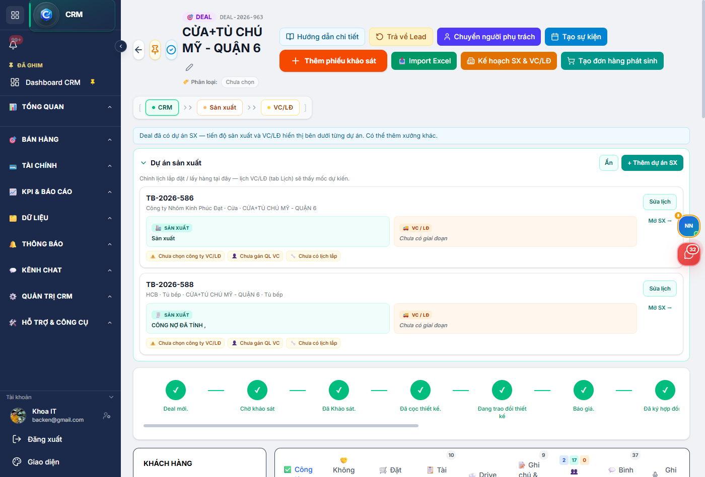
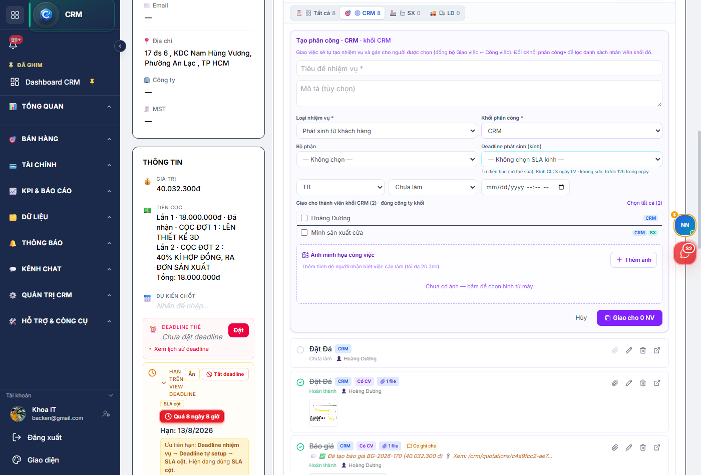
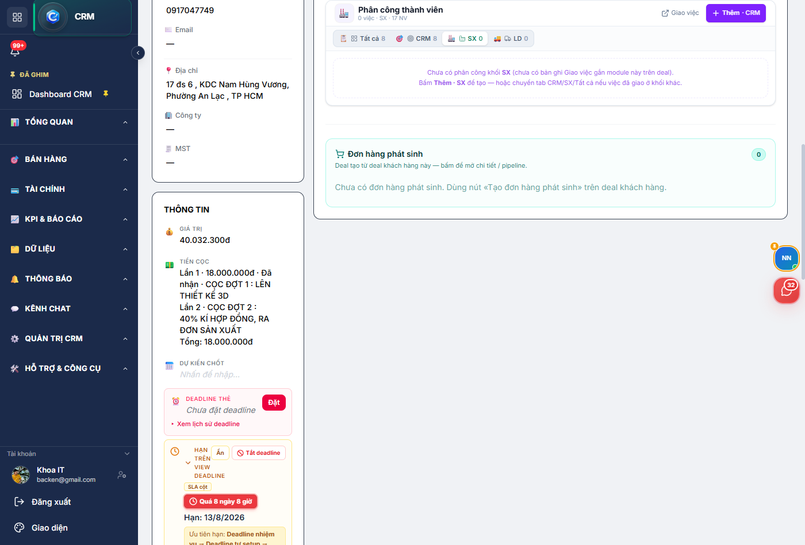
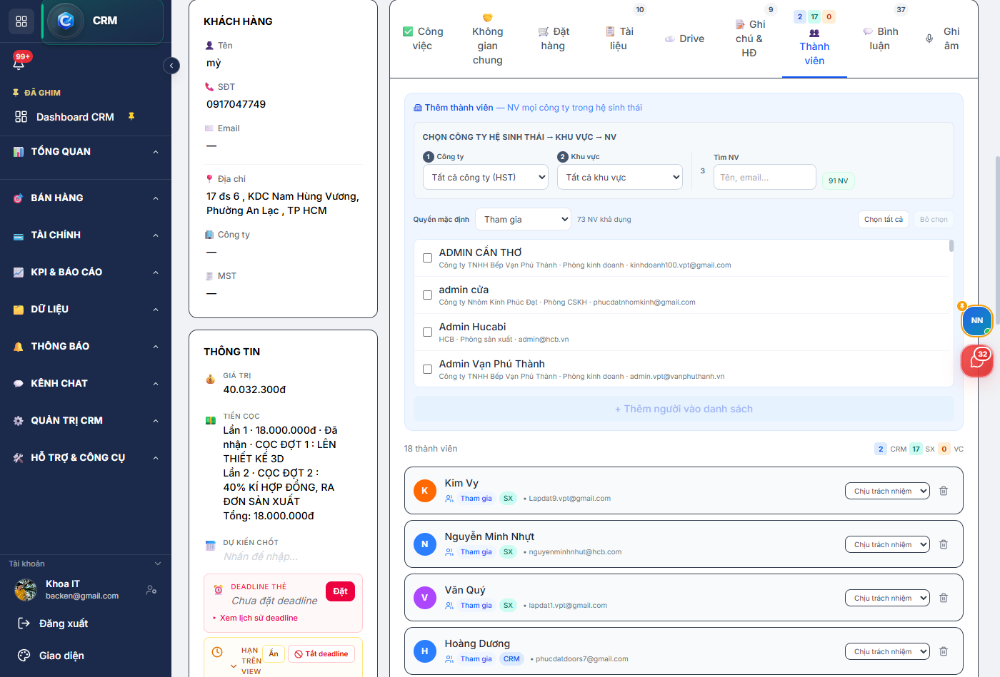
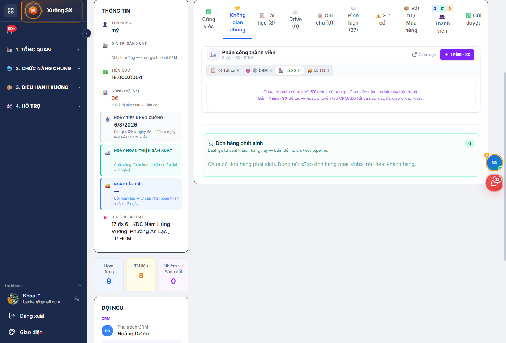
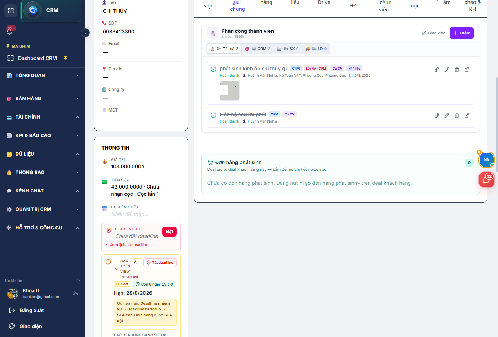

TuBep Pro — Giao việc cho người (CRM / Xưởng SX / Lắp đặt VC-LĐ) trên Lead, Deal và dự án
Ngày lập: 22/08/2026 · Module: CRM · SX · VC
· Ví dụ: DEAL-2026-963 «CỬA+TỦ CHÚ MỸ - QUẬN 6» · deal phát sinh kính Chị Thủy Q7
1. Không gian chung là gì?
Tab Không gian chung là nơi giao việc cho người cụ thể
(Sale, xưởng, lắp đặt…), đồng bộ sang bảng Giao việc của từng khối.
Khác tab Công việc (checklist theo mẫu pipeline).
Mở chi tiết Lead / Deal (hoặc dự án SX · VC)
↓
Bấm tab «Không gian chung»
↓
(Nếu cần) Thêm người ở tab «Thành viên»
↓
Bấm «Thêm» → chọn khối CRM / SX / LD → chọn NV → Lưu
↓
Người nhận thấy việc trên Giao việc + Công việc (đồng bộ)
Sale / NVKD / Admin CRM
Giao việc cho thành viên deal; lọc khối CRM / Xưởng / Lắp đặt; mở link «Giao việc» để xem bảng đầy đủ.
Xưởng SX · VC/LĐ
Cùng tab trên trang dự án (khi dự án gắn CRM deal). Lọc sẵn khối SX hoặc LD tùy module đang mở.
Đừng nhầm: Giao việc trong tab Công việc rồi tưởng xưởng nhận —
xưởng nhận việc được giao ở Không gian chung / bảng Giao việc SX.
2. Mở tab trên Deal CRM
Bước 1
Vào chi tiết Deal
CRM → Dashboard (Kanban) → bấm thẻ Deal.
Trên hàng tab bên phải, bấm Không gian chung
(tooltip: «Phân công thành viên deal và nhiệm vụ giao chéo công ty»).

Hình 1 — Chi tiết deal DEAL-2026-963: hàng tab phải có «Công việc» và «Không gian chung»
Hình 2 — Tab Không gian chung: danh sách phân công (ví dụ 8 việc CRM · 2 NV)
3. Giao việc mới
Bước 3
Bấm «Thêm» và điền form
Bấm Thêm · CRM (hoặc SX / LD tùy chip đang chọn).
Nhập Tiêu đề nhiệm vụ *, mô tả (tùy chọn).
Chọn Loại nhiệm vụ: Phát sinh từ khách hàng / Lỗi từ nhân viên.
Chọn Khối phân công *: CRM · Xưởng (SX) · Lắp đặt (LD) — danh sách NV lọc theo khối + công ty khối.
Ưu tiên, trạng thái, hạn; có thể chọn SLA kính (deadline phát sinh).
Tick người nhận → Thêm ảnh (nếu cần) → bấm Giao cho N NV.
Hoặc Hủy nếu chỉ xem form (không tạo thật).
Hệ thống tự tạo nhiệm vụ và gán cho người được chọn (đồng bộ Giao việc ↔ Công việc).

Hình 3 — Form «Tạo phân công»: tiêu đề, loại, khối, chọn NV, ảnh, Hủy / Giao
Nút Thêm bị khóa? Chưa có thành viên trên deal.
Vào tab Thành viên → thêm NV → quay lại Không gian chung (tải lại nếu cần).
4. Lọc theo khối CRM / SX / LD
Chip lọc chỉ xem việc theo khối, không đổi App Switcher.
Badge trên chip = số phân công (và tooltip hiện số thành viên khối đó).

Hình 4 — Lọc SX: 0 việc SX nhưng vẫn thấy 17 NV khối xưởng — bấm «Thêm · SX» để giao
5. Tab Thành viên (điều kiện giao việc)
Ai không có trong Thành viên thì không vào được deal/dự án
(trừ admin đúng quyền). Không gian chung chỉ giao cho NV đã thuộc deal.
Thêm thành viên — chọn công ty hệ sinh thái → khu vực → NV.
Badge số trên tab (xanh / teal / cam) ≈ số thành viên theo khối CRM / SX / VC.
Khi lập kế hoạch SX & VC/LĐ, hệ thống có thể tự thêm người phụ trách VC — kiểm lại tab này sau khi lưu.

Hình 5 — Tab Thành viên: thêm NV mọi công ty trong hệ sinh thái trước khi giao việc
6. Trên dự án Sản xuất (SX)
Mở dự án SX gắn deal → tab Không gian chung
(URL có ?tab=shared-workspace).
Panel giống CRM; mặc định lọc khối SX.
Trên VC/LĐ cũng có tab tương tự khi dự án gắn CRM deal. Không gắn deal → không dùng được Không gian chung.

Hình 6 — Dự án SX TB-2026-586: tab Không gian chung, lọc SX, nút «Thêm · SX»
7. Việc phát sinh / lỗi NV
Loại «Phát sinh từ khách hàng» hoặc «Lỗi từ nhân viên» dùng khi giao việc ngoài checklist mẫu
(ví dụ phát sinh kính ốp). Có thể gắn nhiều người nhận và file minh họa.

Hình 7 — Ví dụ «phát sinh kính ốp»: loại Lỗi NV · CRM, nhiều người nhận, đã hoàn thành
8. Đơn hàng phát sinh (cuối tab)
Cuối panel Có khối Đơn hàng phát sinh:
danh sách deal tạo từ deal khách hàng (nút header «Tạo đơn hàng phát sinh»),
hoặc link về deal nguồn nếu đang xem chính deal phát sinh.
9. So sánh nhanh
Tab / chỗ
Dùng để
Công việc
Checklist theo mẫu pipeline (gắn mẫu, thêm việc trên deal)
Không gian chung
Giao việc cho người theo khối CRM / SX / LD + đồng bộ Giao việc
Thành viên
Ai được xem deal/dự án — bắt buộc trước khi bấm Thêm
Trang Giao việc
Bảng việc đầy đủ theo module (link từ header panel)
10. Sự cố thường gặp
Triệu chứng
Nguyên nhân / cách xử lý
Không thấy tab Không gian chung trên SX/VC
Dự án chưa gắn CRM deal (crmLeadId)
Nút Thêm bị khóa / cảnh báo vàng
Chưa có thành viên — thêm ở tab Thành viên rồi tải lại
Lọc SX/LD = 0 việc
Chưa giao khối đó — bấm Thêm · SX/LD hoặc chuyển chip CRM / Tất cả
Không chọn được NV trong form
NV chưa thuộc Thành viên khối/công ty đang chọn
Xưởng «không nhận» việc Sale giao
Việc nằm tab Công việc thay vì Không gian chung / Giao việc SX